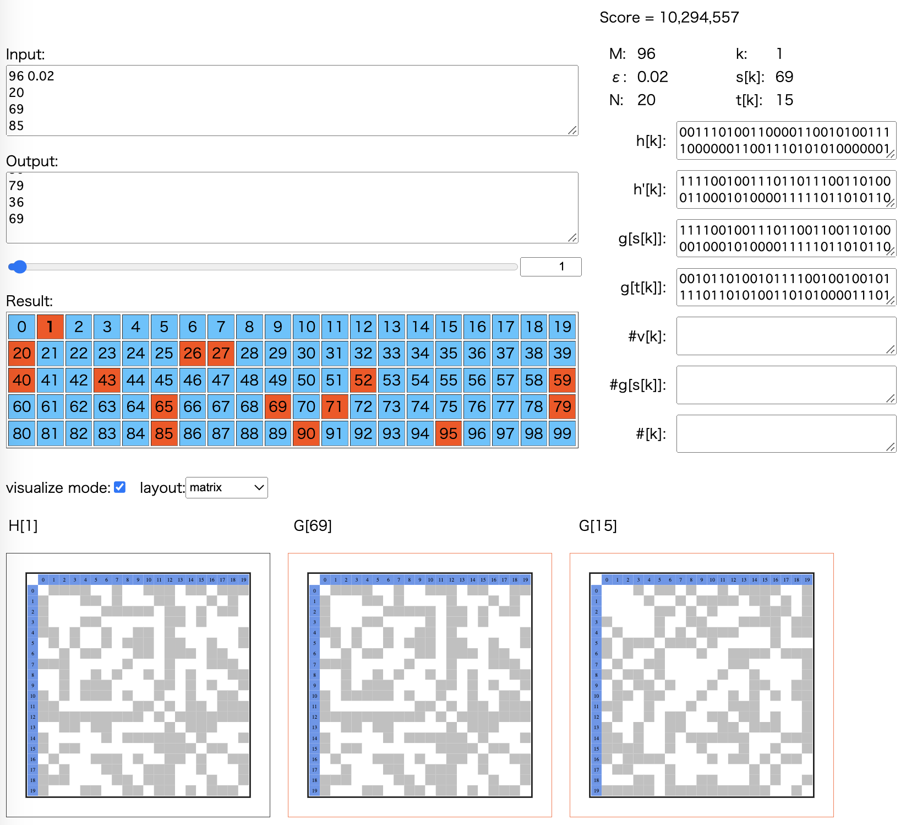

HACK TO THE FUTURE 2023 予選 (AtCoder Heuristic Contest 016)¶

問題概要¶
- 整数Mとエラー率εが与えられる
- 予め整数N(4 <= N <= 100)を決めておき、頂点数がすべてNであるM個の無向グラフを作成する
- 各クエリ(100回)では、M個のうちのどれか1つから「エラー率で辺が反転」かつ「頂点をランダムに並び替えた」グラフHが与えられる
- クエリごとに、どのグラフから生成されたかを予測せよ
- スコアは、Nが小さいほど、かつ、間違いが少ないほど高くなる
時間¶
- 216 時間
個人的メモ¶
- Nをできるだけ小さくしつつ、ノイズとラベルなしグラフの対処をするのが難しい問題
- 素直に、ノイズなしのケースから考えて、それをベースに発展させていくのがよかったかも
問題固有の性質¶
- 「M個のグラフをどう用意するか？」と「Mクラス分類問題」
- 分類問題：グラフHが与えられて、どのクラスGに属するかを当てる問題
- Nをできるだけ小さくしたいが、Nが小さい場合は全探索可能
- 埋め込むグラフは前もって計算しておくことが可能
- できるだけ都合のよいグラフを探索
アプローチ¶
- 今回、いろんなアプローチが適用できた
- 手法ごとに得意不得意があるようで、可能ならεなどに応じて複数の手法を組み合わせたほうがよかった模様
全ケース埋め込み系¶
- ε=0(誤差なし)の場合
- ラベルなしグラフはN=6で100個を超えるので、N=4,5,6で必要数生成すれば区別できるため、理論値が出せる
- 一致の判定は、頂点の割当をすべて試すO(N! N^2)
- ただし、次数列でやってしまうと、異なるグラフでも次数列が同じになるケースがN=5から発生するため、最適にならないことに注意
- (Nをあえて必要数よりも小さくしてギャンブルする)
- (最初にここから考えられていれば、その後、頂点倍化してブロック行列で扱うアイデアが思いつきやすかったかも)
ブロック行列系¶
- εが大きい場合に有効(最上位)だった手法な模様
- k個のクラスタを持つようにして、クラスタ内、クラスタ間に辺を貼る
- 頂点をグループ(クラスタ)に分ける
- k=5でも、クラスタ内の辺(自己ループ、対角要素のところ)をどうするかも含めて区別すればM=100に足りる
- ここは、ある(クリーク)/なしでなく、連続値も
- https://twitter.com/eijirou_kyopro/status/1594578141447536641
- 他にも、補グラフを考える、など
- または、クラスタの頂点数を変えたクリーク(完全グラフ)やスターグラフを埋め込む
- 頂点数の違いで区別する
- サイズ8が2個＋サイズ10が1個とか、個数も考慮するとN進数にできる
- 頂点数の違いで区別する
- どちらの場合でも、隣接行列を拡大したような感じになって、冗長性があり、ノイズに耐性ができる
- ただ、頂点の(クラスタへの)対応付けが必要で、それは山登りや焼きなまし、クラスタリング、マッチング(最小費用流)？などで行う
- ただし、ここはあんまり単純ではないかも(目的関数の工夫や多点スタートなど必要かも。ref:解説放送)
- 解説放送では、隣接行列で見たとき、各ブロック内は「辺なし」か「全部辺がある」感じになるので、各ブロック内の頂点数をd、辺のある本数をkとしてmin(k,d^2-k)を全ブロックについて和を求めたものを目的関数にする感じの方法が説明されていた
- ただ、この関数はd^2/2本付近でどっち側に行くかが急激に変わるのでなめらかではなく、最適化が難しい
- 初期解(山をできるだけ超えなくてすむようにグルーピング)を作ってから最適化
- さらに、何回かやって求める感じにする場合は、似た接続状況の頂点があるときに過小評価されやすい問題もあるので、補正なども
- 4クラスタでも100パターン作れるが5クラスタにしているのは、このあたりの問題も考慮してできるだけ成功率が高いグラフを選ぶため？
ベイズ系¶
- データHが与えられたときにクラスGのどれか？(Mクラス分類)
- ベイズの定理からP(G|H) = P(H|G)P(G)/P(H) ～ P(H|G)
- P(G)は等確率で選ばれる、P(H)は他のGでも共通
- P(H|G)はGからHが生成される確率で、これは計算可能
- ラベル付きグラフとして考えると、Hを固定してGの頂点を入れ替えて辺の対応関係を見ると、1/N! * Σ_{頂点の入れ替え方すべて} p^(変化した辺の数) * (1-p)^(変化してない辺の数)
- Nが小さければ普通に計算しても間に合う
- εが小さい場合に有効(admin解など)だった手法な模様
- または、サンプリングで生成、など
- Gの選び方で分類成功率が変わるので、Nと分類成功率で一番スコアが高くなるように(前もって)選ぶ
- 選んだグラフ以外のありえるグラフすべてについても考慮
グラフ間の距離を使う系¶
- 距離が十分離れたGを選んで使うのが重要
- ただし、解説放送で言及されていたが、距離として、単純にGとHとの最小誤差(異なっている辺の数、ハミング距離、編集距離)的なものを見てしまうと、(だいたい)同じ距離の別のGと誤判定してしまう可能性がある
- たとえ、その誤判定したGからHが生成される可能性が低かったとしても
- 生成確率(上のベイズの定理)を考慮することで、より可能性が高いGを選ぶことができる
- https://twitter.com/satanic0258/status/1594281359539073024
次数列間の距離を使う系¶
- εが大きい場合に有効(最上位)だった手法な模様
- 「グラフ間の距離を使う系」だが、より扱いやすいものとして次数列を利用
- 与えられたHに対し、次数列を取り出して、それで判断
- 隣接行列で扱うと、同型判定などでO(N!)かかるが、次数列は簡単に用意できるので、Nが大きくても扱いやすい
- 前もってGから生成されるHがかぶらないようにGを用意できれば良い
- できるだけ特徴的なグラフを生成、焼きなましたり、など
- 距離は、Gにノイズをのしたものの平均との距離や、ユークリッド距離、二乗和誤差/MSEなど
- https://twitter.com/yunix91201367/status/1594685374298607616
- https://twitter.com/stat_learning/status/1595026871405596672
- https://twitter.com/stat_learning/status/1596827674965872640
特定のグラフを埋め込む系¶
- 特定のグラフを埋め込んで、それを取り出して、その数などで判断
- ノイズがのったあとに区別しやすい/取り出しやすいとは限らないので、埋め込むグラフをどうするかはいろいろ考える余地がある
- かなり近いグラフを埋め込むことになりがちで、それらの区別に失敗しやすい
- 完全グラフ(クリーク)
- スターグラフ
- k-正則グラフ
- 二部グラフ
- 補グラフ
- 複数種類の混ぜ合わせ
- その他
- 複数グラフを入れる場合、それらのグラフ間は独立にしたりしがちなので、ノイズ耐性をもたせようとすると、どんどんNが大きくなり得る
- そのためいろいろうまく噛み合わないとこのアプローチでは100位以内も難しかった模様
- ノイズ耐性のもたせ方として、Mが小さい場合は、3倍するなどすれば、取り出し時にプラマイ1ずれても大丈夫になる
- 数の表現の仕方は、いろいろ
- そのまま個数で表現
- ビットに割り当てて表現
- 同じものを複数個入れる場合は、n進数的に扱いにする
- など
- 取り出し方(クラスタリング)はいろいろ
- ルールベース
- 山登り、焼きなまし
- グラフクラスタリング
- ノンパラベイズ
- クラスタリングでも、そのグラフがあるかどうか、だと自由度が高くて探しにくい
- クラスタ数はk個、と固定して頂点のクラスタ番号を考える方が扱いやすかった模様(ブロック行列系)
GNN系¶
- グラフの分類問題なので、GNNが考えられる
- 1位のnagissさんやeivourさんはこの方向な模様
- GNNの代表的なタスクとしては、ノード単位かグラフ単位
- ざっくり、隣接行列とεを入力に、頂点ごとのchannelをベクトルとして出力して、各Gごとに、GとHの頂点間の割当コストをベクトルの内積にして割当問題で最小となるものを求めている模様(ネットワークはGraph Attention Network(GATs)？Transformer-Encoderライクな模様)
- (基本、推論コードだけ提出になるので、グラフの選び方や学習の部分とかはコードからはわからなそう → 解説記事参照)
諦める系¶
- εが0.4に近いほどノイズが大きすぎて正解するのが難しい
- (とはいえ、上位はかなり正解している、、、)
- 下手に手法を適用するよりもN=4で適当に解答したほうがスコアが出うる
- https://twitter.com/yuusanlondon/status/1594306814807789568
ソースコードに埋め込む¶
パラメータを埋め込む¶
- 今回は、Mやεによって最適なパラメータ(Nなど)を前もって計算しておきソースコードに埋め込むことができた
- また、G自体も埋め込んでおくこともでき、計算時間削減ができた
- 分類モデルなどを埋め込んでいた人も結構いた模様
- ただし、ソースコードのサイズが増大して制限に引っかかる可能性も
- バイナリ埋め込みはbase64などで
- バイト列埋め込みは罠がある
コードを埋め込んで複数の言語を使う¶
- コンパイル時間や実行時間、入出力時間が含まれてしまうが、言語をpythonにしてC++コードを吐き出してビルドしてファイルを生成して参照などができる
- 逆にC++コードでpythonを使う、なども
- 利点として、c++は高速な実行、pythonはnumpy,scipy,scikit-learn,networkx等が利用できるので、高速な行列演算や実装が難しい関数、ライブラリ等での結果をc++で使うことができる、など
import os
os.system("g++ --version")
#include <iostream>
int main(){
system("python3.8 --version");
return 0;
}
関連する話題¶
2元対称通信路(Binary Symmetric Channel)¶
- 入力(0か1)が確率pで反転してしまう通信路モデル
- wikipedia
- p=0なら誤りはない、p=0.5なら出力から入力が全くわからない
- 通信路容量は、1-H(p), H(p)は2値エントロピー関数
- 今回の問題だと、各頂点の対応がわかっている場合の辺の有無がこれに該当する
- (pが大きいあたりで急激に結果が悪化する話)
- https://twitter.com/stat_learning/status/1595061686725115904
- https://twitter.com/shr_pc/status/1595057510251012096
反復符号(繰り返し符号, Repetition code)¶
- wikipedia
- ビットの情報をn回繰り返すことで冗長性を持たせる
- 今回でいうと、複数の辺に同じ情報を持たせる感じ
- decodeは、多数決を取ることで、多少のノイズがあっても正しく情報を得られることを狙う
- たとえば、n=5の場合は、入力が0なら00000を送る感じで、5つのうち3個or4個or5個が反転してしまうと誤りになってしまうので、エラー率はp_e = Comb(5,3) * p^3 * (1-p)^2 + Comb(5,4) * p^4 * (1-p) + Comb(5,5) * p^5
- 今回、p=0.4までありえるため、エラー率を小さくしようとすると、かなり大きなnが必要なことがわかる
Stochastic Block Model¶
- https://twitter.com/theory_and_me/status/1594343159806324736
- https://qiita.com/yohm/items/5bb1d0c56e1b6ee2852c
スペクトラルクラスタリング¶
- https://twitter.com/hamamu_kyopro/status/1594293987925725189
- https://qiita.com/sakami/items/9b3d57d4be3ff1c70e1d
- https://mr-r-i-c-e.hatenadiary.org/entry/20121214/1355499195
- https://komachi.hatenablog.com/entry/20090128/p1
Markov Cluster Algorithm(MCL)¶
- https://sites.cs.ucsb.edu/~xyan/classes/CS595D-2009winter/MCL_Presentation2.pdf
- https://rishida.hatenablog.com/entry/2013/09/24/011423
Weisfeiler-Lehman Graph Kernels¶
- https://blog.knshnb.com/posts/weisfeiler-lehman-graph-kernel/
- https://twitter.com/birdwatcherYT/status/1594302504581607424
- https://twitter.com/G4NP0N_kyopro/status/1594276996317876225
Stoer-Wagner Algorithm¶
- https://tjkendev.github.io/procon-library/python/graph/stoer-wagner-algorithm.html
- https://twitter.com/osrehun/status/1594269975090327552
最大クリーク¶
- MaxCliqueSearch
- A Simple and Faster Branch-and-Bound Algorithm for Finding a Maximum Clique
- A Much Faster Algorithm for Finding a Maximum Clique with Computational Expertiments
次数列からグラフ生成¶
- Havel-Hakimi algorithm
- https://kopricky.github.io/code/Academic/random_graph_generator.html
- Efficient and simple generation of random simple connected graphs with prescribed degree sequence
- https://twitter.com/komora71_/status/1594278415850356737
QRコード¶
その他¶
- 分析時、出力スコアで結果を見てしまうと、かなり大きな値と小さい範囲が混ざり合ってわかりにくくなるので、Nをプロットして確認するのがよい
- 初の相対スコア
- 相対スコアシステムの場合は、意図的に調べたいパラメータの領域(例えばε>=0.2とか)について、スコアが0になるように提出すると、差分からその領域の合計点がわかり、TOPとの差がわかる
- ただしいろいろ前提があるので、あくまで参考程度に
- 問題の設定によってスコアが違いすぎる&相対スコアで安定的な評価をするのが難しかった
mean(ln(score))を使うなど(1位nagissさんの解説)
- 参加者(提出者)数1000人超え
- 「皆様の度肝を抜く解説」
- https://twitter.com/tsukammo/status/1592882901427048449
- 裏話
- https://twitter.com/inani_waon/status/1594452257147273216
解説¶
(100位まで&発言を見つけられた方のみ)
- 1位nagissさん
- https://atcoder.jp/contests/ahc016/submissions/36930835 (延長戦admin解超え)
- 2位sugarrrさん
- 3位ymatsuxさん
- 4位Shun_PIさん
- 5位shibh308さん
- 6位yunixさん
- https://twitter.com/yunix91201367/status/1594280417011458048
- https://twitter.com/yunix91201367/status/1594292601963761664
- https://twitter.com/yunix91201367/status/1595051923844976640
- https://twitter.com/yunix91201367/status/1595059180481949696
- https://twitter.com/yunix91201367/status/1594272118879162368
- https://twitter.com/yunix91201367/status/1594272956040957953
- https://twitter.com/yunix91201367/status/1594275671924428800
- https://yunix-kyopro.hatenablog.com/entry/2022/11/23/175346
- 7位terry_u16さん
- 8位Komakiさん
- 9位itigoさん
- https://twitter.com/itigo_purokonn/status/1594273289467498496
- https://twitter.com/itigo_purokonn/status/1594276094165012480
- https://twitter.com/itigo_purokonn/status/1594277405698699265
- https://twitter.com/itigo_purokonn/status/1594302515511980032
- https://twitter.com/itigo_purokonn/status/1594303525361967104
- 10位dn6049949さん
- 11位mtsdさん
- 12位saharanさん
- 13位yuusanlondonさん
- 14位yowaさん
- 15位Jirotechさん
- 16位eijirouさん
- 17位rhooさん
- 18位fugusukiさん
- 19位kensさん
- 20位satanic0258さん
- 21位Shibuyapさん
- 22位wleiteさん
- 23位Rafbillさん
- 24位tishii24さん
- 25位risujirohさん
- 26位yokozuna57さん
- 27位packer_jpさん
- https://twitter.com/packer_jp/status/1594269926042521601
- https://twitter.com/packer_jp/status/1594276357516972033
- https://twitter.com/packer_jp/status/1594286333446348800
- https://twitter.com/packer_jp/status/1594294539388608512
- https://twitter.com/packer_jp/status/1594273539825491968
- https://twitter.com/packer_jp/status/1594301363793858560
- https://twitter.com/packer_jp/status/1594303387176402944
- https://twitter.com/packer_jp/status/1594300168505298946
- https://twitter.com/packer_jp/status/1594318780158525440
- 28位rabotさん
- 29位Haaさん
- 30位HBitさん
- 31位Yu_212さん
- 32位tokoharuさん
- 33位ponjuiceさん
- 34位ynasuさん
- 35位snow39さん
- 36位WA_TLEさん
- 37位hirokazu1020さん
- 38位notkamonohasiさん
- 39位EmKさん
- 40位hitoareさん
- 41位Aquariusさん
- 42位eivourさん
- https://twitter.com/contramundum2/status/1594341756363235328
- https://twitter.com/contramundum2/status/1594355849111121922
- https://twitter.com/contramundum2/status/1594358843823124480
- https://twitter.com/contramundum2/status/1594360871412957184
- https://twitter.com/contramundum2/status/1594362038809001985
- https://twitter.com/contramundum2/status/1594365615392710657
- https://twitter.com/contramundum2/status/1594369063160926208
- https://twitter.com/contramundum2/status/1594373969217744898
- https://twitter.com/contramundum2/status/1594381950629736449
- https://twitter.com/contramundum2/status/1594372230418309120
- https://twitter.com/contramundum2/status/1594373969217744898
- https://twitter.com/contramundum2/status/1594382846843826176
- https://twitter.com/contramundum2/status/1594383104847724544
- https://twitter.com/contramundum2/status/1594393495535427584
- 43位shirowaさん
- 44位yvay5cqeさん
- 45位catoonさん
- 46位Risenさん
- 47位theory_and_meさん
- https://twitter.com/theory_and_me/status/1594335501850320896
- https://twitter.com/theory_and_me/status/1594336827233574912
- https://twitter.com/theory_and_me/status/1594343159806324736
- https://twitter.com/theory_and_me/status/1594352259181072384
- https://twitter.com/theory_and_me/status/1595300043321266176
- 48位Trineutronさん
- 49位hari64さん
- 50位Nyaanさん
- 51位kozimaさん
- https://twitter.com/t33f/status/1594270788336910336
- https://twitter.com/t33f/status/1594272953276854272
- https://twitter.com/t33f/status/1594275770901598208
- https://twitter.com/t33f/status/1594281782266171392
- https://twitter.com/t33f/status/1594292291916935168
- https://twitter.com/t33f/status/1594296474548174848
- https://twitter.com/t33f/status/1594307446436397058
- https://twitter.com/t33f/status/1594314121813839872
- https://twitter.com/t33f/status/1594316930344976384
- https://twitter.com/t33f/status/1594317319203098625
- https://twitter.com/t33f/status/1594319523838296064
- https://twitter.com/t33f/status/1594363047946379266
- https://twitter.com/t33f/status/1594654125626884101
- https://twitter.com/t33f/status/1595037195542630400
- https://twitter.com/t33f/status/1595039136259637250
- https://twitter.com/t33f/status/1595055306312417281
- https://twitter.com/t33f/status/1595056820149968898
- https://twitter.com/t33f/status/1595245174338486272
- https://lkozima.hatenablog.com/entry/2022/11/21/231939
- 52位hamamuさん
- 53位montplusaさん
- 54位nadare881さん
- 55位maeda3さん
- 56位yosssさん
- 57位arimattiさん
- 58位y_kawanoさん
- 59位krさん
- 60位wanuiさん
- 61位tardigradeさん
- 62位ra5anchorさん
- 63位Kiri8128さん
- 64位bowwowforeachさん
- 65位zachさん
- 66位ValGrowthさん
- 67位smsiikさん
- 68位kaz2000さん
- 69位G4NP0Nさん
- https://twitter.com/G4NP0N_kyopro/status/1594274684656549888
- https://twitter.com/G4NP0N_kyopro/status/1594276996317876225
- https://twitter.com/G4NP0N_kyopro/status/1594280503359995904
- https://twitter.com/G4NP0N_kyopro/status/1594292657916112897
- https://twitter.com/G4NP0N_kyopro/status/1594311444581208064
- https://twitter.com/G4NP0N_kyopro/status/1594314447652519937
- https://twitter.com/G4NP0N_kyopro/status/1594316961319878656
- https://twitter.com/G4NP0N_kyopro/status/1594354425757593602
- https://twitter.com/G4NP0N_kyopro/status/1594353464775438339
- https://twitter.com/G4NP0N_kyopro/status/1595040760872992770
- 70位ha15さん
- 71位greedy_imosさん
- 72位ToastUzさん
- https://twitter.com/ToastUz/status/1594335544083120129
- https://twitter.com/ToastUz/status/1595180500196675586
- https://twitter.com/ToastUz/status/1595185526310850560
- https://twitter.com/ToastUz/status/1595214616996745216
- https://twitter.com/ToastUz/status/1595241783016898560
- https://twitter.com/ToastUz/status/1595242817600729088
- https://qiita.com/toast-uz/items/4a6e9bd19cddd283452d
- 73位ikomaさん
- 74位kusanoさん
- 75位nesyaさん
- 76位iwashi31さん
- 77位nasuoさん
- 78位simanさん
- 79位Forestedさん
- 80位rs02さん
- 81位RinSakamichiさん
- 82位hiro116sさん
- 83位xyz600さん
- 84位8wingsさん
- 85位dn154さん
- 86位takytankさん
- 87位pokaさん
- 88位ks2mさん
- 89位sumoooruさん
- 90位koyumeishiさん
- https://twitter.com/koyumeishi_/status/1594278043589431297
- https://twitter.com/koyumeishi_/status/1594283274691829762
- https://twitter.com/koyumeishi_/status/1594284732438958086
- https://twitter.com/koyumeishi_/status/1594286580340260870
- https://twitter.com/koyumeishi_/status/1594288086154117120
- https://twitter.com/koyumeishi_/status/1594289308407824386
- https://twitter.com/koyumeishi_/status/1594292294358007808
- https://twitter.com/koyumeishi_/status/1594425890775404544
- https://twitter.com/koyumeishi_/status/1594793576252444672
- https://twitter.com/koyumeishi_/status/1595133298145394688
- 91位yupiteruさん
- 92位highjumpさん
- 93位cozy_saunaさん
- 94位marroncastle917さん
- 95位wasa855さん
- 96位kenken714さん
- 97位MathGorillaさん
- 98位SuppliLionさん
- 99位Bellisさん
- 100位hiikunZさん